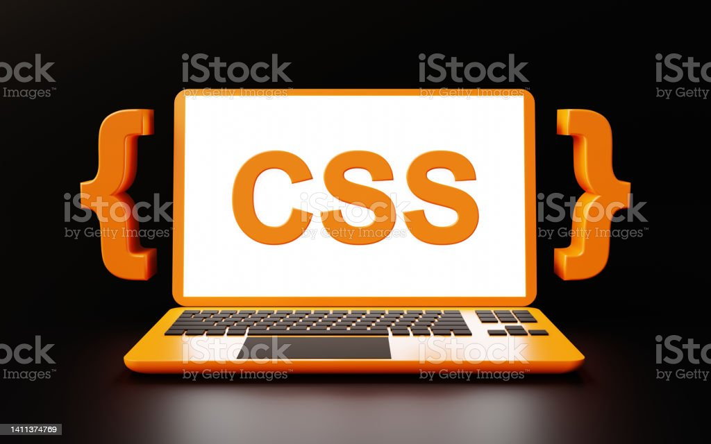

- HTML
- CSS
- JAVASCIPT

CSS는 Cascading Style Sheets의 약자로 HTML, XHML, XML 같은 문서의 스타일을 꾸밀 때 사용하는 스타일 시트 언어입니다. HTML로 문서의 뼈대를 만들면 CSS는 이 문서를꾸며 글꼴, 배경색, 위치, 너비와 높이 등을 지정하거나 웹 브라우저, 스크린 크기, 장치에 따라서 화면을 다르게 표시될 수 있도록 지정하는 것입니다.
CSS는 1996년 12월 W3C(웹 문서 표준을 만드는 기관)가 도입했는데 그전엔 HTML 언어 하나로 문서의 뼈대도 만들고 꾸밈도 같이 했습니다. 그러다 보니 HTML문서를 수정할 때 모든 문서를 하나씩 수정해야 하는 번거로움이 있었습니다.
CSS는 문서의 내용(content)과 표현(presentation)을 분리하여 CSS 파일 하나만 수정하면 스타일에 해당하는 HTML 문서가 한번에 수정되는 엄청난 장점이 있습니다.앞서 말했듯이 초창기 웹은 HTML만으로 만들기, 꾸미기를 하였습니다. 그러나, 웹 사이트가 폭발적으로 커지면서 여러개의 공통적인 문서(HTML)를 1개의 디자인이 변경되면 모든 파일을수정하여야 되는 문제가 발생하게 되었습니다. CSS는 이런 문제를 동시에 해결할 수도 있고, 웹 페이지 정보와 스타일을 분리하여 유지보수를 수월하게 할 수 있습니다.
CSS로 기대되는 효과?
① 정보(HTML)와 디자인(CSS)를 분리하여 관리할 수 있습니다.
② 정보를 수정하지 않고 디자인만 변경할 수 있습니다.
⇒ 태그마다 style 속성으로 주게 되면 소스코드가 지저분해 지는데, 분리하여 관리하게 되면 유지보수 및 가독성이 좋아집니다.
③ 검색엔진이 HTML을 해석 가능하도록 하기 때문에 더 많은 방문자들이 방문할 수 있도록 유도할 수 있습니다.
⇒ 시각장애인을 위한 스크린리더 프로그램이 HTML문서를 해석하도록 할 수 있습니다. (웹접근성)